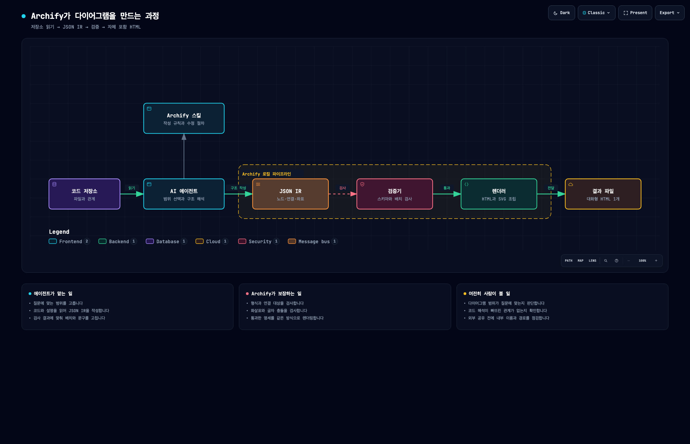

안녕하세요. dev.log입니다.
처음 맡은 코드 저장소를 열면 파일은 많은데 전체 흐름을 보여 주는 그림은 없거나 이미 오래된 경우가 있습니다. AI 코딩 에이전트에게 구조도를 부탁하면 빠르게 그려 주지만, 그럴듯한 상자 하나가 실제 코드에 없는 구성요소라면 온보딩 자료로 쓰기 어렵습니다.
Archify는 에이전트가 읽은 구조를 JSON 명세로 남기고, 그 명세를 검사한 뒤 대화형 HTML 다이어그램으로 만드는 Agent Skill입니다. 다만 코드를 자동으로 해석해 정답을 찾아 주는 정적 분석기는 아닙니다. 에이전트가 범위와 관계를 판단하고, Archify는 그 결과가 정해진 형식과 배치 규칙을 지키는지 확인합니다.
무엇이 다른지 확인하려고 현재 main 커밋을 고정했습니다. 같은 환경에서 한국어 다이어그램과 잘못된 연결을 각각 검증했습니다.

Archify가 그림을 만드는 방식
공식 저장소는 Archify를 Node.js 기반 렌더링·검증 시스템으로 소개합니다. Cursor, Claude Code, Codex CLI, OpenCode에서 Agent Skill로 사용할 수 있습니다. 사용자가 채팅에서 그리고 싶은 범위를 설명하면 에이전트가 코드나 시스템 설명을 읽어 JSON IR을 작성합니다. IR은 상자와 화살표를 그리기 전에 구성요소, 관계, 위치를 구조화한 중간 명세입니다.
처리 흐름은 다음과 같습니다.
- 에이전트가 저장소나 시스템 설명을 읽고 질문에 필요한 범위를 고릅니다.
- 구성요소와 연결 관계, 좌표를 typed JSON IR로 작성합니다.
- Archify가 스키마, 연결 대상, 화살표 경로, 글자와 선의 간격 등을 검사합니다.
- 검사를 통과한 명세를 HTML과 SVG가 들어 있는 파일 하나로 렌더링합니다.
지원하는 다이어그램은 Architecture, Workflow, Sequence, Data Flow, Lifecycle 다섯 종류입니다. 결과 화면에서는 노드 검색, 상류·하류 관계 추적, 두 노드 사이의 경로 확인, 라이트·다크 테마 전환을 사용할 수 있습니다. PNG, SVG, WebM, 1200×630 Share Card 내보내기도 공식 범위에 포함됩니다.
Archify는 AI에게 그림 자체를 맡기지 않습니다. 에이전트는 의미를 해석해 명세를 쓰고, 로컬 렌더러는 같은 명세를 같은 화면으로 바꿉니다. JSON과 결과물을 함께 버전 관리하면 그림이 바뀐 이유도 코드 diff처럼 추적하기 쉽습니다.
7개 노드 실험에서 확인한 검증 경계
테스트는 Archify main의 72c750b 커밋과 Node.js v26.0.0에서 진행했습니다. 공식 예제를 그대로 캡처하는 대신, 저장소에서 결과 HTML까지 이어지는 과정을 한국어 7개 노드로 작성했습니다. 테스트를 실행한 주체는 사용자 개인이 아니라 Codex입니다.
showcase 품질로 검증한 결과는 다음과 같습니다.
| 확인 항목 | 관찰 결과 | 해석 범위 |
|---|---|---|
| 명세 검증 | 9개 검사 통과, 오류 0개, 경고 0개 | 작성한 JSON의 형식과 배치가 규칙을 통과함 |
| 결과 HTML | 806,884바이트, SHA-256 영수증 생성 | Viewer와 폰트까지 한 파일에 담기는 대신 파일이 작지는 않음 |
| 브라우저 검사 | 1440×900부터 2048×1320까지 4개 화면에서 오버플로·가독성 통과 | 지정된 데스크톱 화면 범위의 자동 검사 결과 |
| 사람의 시각 검토 | pending으로 기록 | 자동 검사와 디자인 판단을 분리함 |
정상 입력만 보면 검증기가 무엇을 거부하는지 알기 어렵습니다. 그래서 노드 하나만 만든 뒤 존재하지 않는 missing-node를 연결 대상으로 지정했습니다. Archify는 이 입력을 검증 단계에서 거부하고 종료 코드 1, layout/constraint, 문제가 된 대상 이름을 JSON으로 돌려줬습니다. 에이전트가 실패 원인을 읽고 해당 부분만 고칠 수 있는 형태입니다.
실험에서는 통과한 명세와 실패한 명세를 기계가 구분하고, 그 결과를 해시와 진단 코드로 남기는 과정을 확인했습니다. 7개 노드뿐인 HTML도 약 807KB라는 비용은 함께 드러났습니다. Viewer와 폰트까지 들어 있는 파일 하나를 얻지만, 작은 Markdown 다이어그램보다 저장 공간과 리뷰 부담이 커질 수 있습니다.
영구 설치와 일회성 실행 중 고르기
Node.js가 준비돼 있다면 공식 전역 설치 명령은 다음과 같습니다.
npx skills add tt-a1i/archify -g영구 설치 전에 Codex에서 한 번 시험하려면 다음 명령을 사용할 수 있습니다.
npx skills use tt-a1i/archify@archify --agent codex첫 요청은 API 경로 하나로
설치보다 중요한 것은 한 그림이 답할 질문을 좁히는 일입니다. “이 저장소 전체를 그려 줘”라고 요청하면 파일 목록을 닮은 복잡한 그림이 나오기 쉽습니다. 아래처럼 독자가 따라갈 경로와 상자 수, 제외 조건을 함께 적는 편이 낫습니다.
Use Archify to analyze this repository.
Show the API request path as an Architecture diagram with at most 8 core components.
Include the external caller, storage, and trust boundaries.
Omit any component that cannot be supported by repository evidence.
Deliver one self-contained HTML file.첫 결과에서 모든 세부 내용을 한 번에 고치려 하지 않아도 됩니다. 인증 경계를 추가해 줘, 결제 요청 경로만 강조해 줘, 캐시 실패 흐름은 Sequence로 분리해 줘처럼 질문을 좁혀 수정하세요. 그러면 JSON 명세의 나머지 구조를 보존하기 쉽습니다.
Mermaid 대신 Archify를 고를 조건
Mermaid 공식 문서와 GitHub의 Markdown 지원 설명, Archify 공식 문서를 바탕으로 사용 조건을 비교했습니다. 직접 성능을 겨룬 결과는 아닙니다. 두 도구는 비슷한 그림을 만들 수 있지만, 편집 방식과 산출물의 목적이 다릅니다.
| 선택 기준 | Mermaid | Archify |
|---|---|---|
| 입력 | Markdown과 비슷한 텍스트 문법 | 에이전트가 주로 작성하는 typed JSON IR |
| 표시 위치 | GitHub의 Mermaid 코드 블록처럼 문서 안에서 렌더링하기 쉬움 | 자체 포함 HTML을 열어 보는 방식이 중심 |
| 상호작용 | 문서 렌더링이 중심이며, 호스트 설정에 따라 노드 링크·클릭 이벤트 지원 | 검색, 경로 추적, 역할 비교, 발표 화면이 Viewer에 기본 포함 |
| 검증 | 문법과 렌더링 중심 | 스키마, 연결, 배치, 결과물 검사와 선택적 저장소 근거 |
| 편집 부담 | 작은 그림은 직접 고치기 쉬움 | 위치와 관계를 JSON으로 조정하거나 에이전트에게 수정 요청 |
README나 이슈 본문에 작은 정적 그림 하나를 넣을 때는 Mermaid가 더 간단합니다. 반대로 온보딩이나 설계 리뷰에서 노드를 찾아보고 특정 요청 경로를 따라가야 한다면 Archify의 HTML Viewer가 유용합니다. Before·Delta·After를 보여 주는 Architecture Delta도 변경 전후의 작성된 명세를 비교할 때 강점이 있습니다.
마우스로 상자를 자유롭게 옮기는 WYSIWYG 편집기, Mermaid 자동 변환기, 호스팅 공유 서비스가 필요하다면 현재 Archify의 방향과 맞지 않습니다. 공식 문서도 자동 Mermaid 파싱, 범용 자동 배치, 호스팅 공유, WYSIWYG 편집을 지원 범위 밖으로 명시합니다.
저장소 근거가 아키텍처 정답은 아닌 이유
Archify의 validated를 “아키텍처 내용이 모두 사실”이라는 뜻으로 읽으면 안 됩니다. 기본 검증은 JSON 형식, 존재하는 연결 대상, 도형과 화살표의 배치, 생성된 HTML/SVG의 구조를 확인합니다. 에이전트가 중요한 서비스 하나를 빼먹었거나, 실제 호출 방향을 반대로 이해한 경우에는 올바른 형식의 잘못된 명세가 만들어질 수 있습니다.
코드 근거를 붙이는 기능도 자동 정적 분석과는 다릅니다. Architecture 명세에 공개 저장소 URL과 40자리 커밋을 적고, 파일 경로와 줄 범위를 직접 연결해야 합니다. 여기에 --repo-root를 제공하면 Archify가 Git 객체를 기준으로 근거를 검사합니다. 지정한 커밋과 파일의 존재 여부는 확인하지만, 다이어그램이 운영 환경 전체를 빠짐없이 설명하는지는 판단하지 않습니다.
따라서 첫 도입에서는 저장소 전체보다 한 질문을 고르는 편이 안전합니다. 예를 들어 “로그인 요청이 데이터베이스까지 가는 경로”처럼 코드에서 확인할 수 있는 흐름 하나를 그립니다. 각 상자에 근거 파일을 붙인 뒤에는 담당자가 빠진 관계를 검토하세요. 검토를 통과한 JSON과 HTML을 같은 변경 사항에 넣으면 Archify의 재현성과 리뷰 가능성을 함께 활용할 수 있습니다.